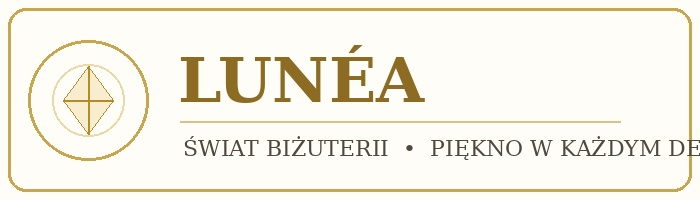

Witamy w świecie LUNÉA

LUNÉA to wyjątkowy sklep z biżuterią, w którym znajdziesz dodatki na każdą okazję. Oferujemy eleganckie naszyjniki, delikatne bransoletki, efektowne kolczyki, pierścionki oraz biżuterię ze stali szlachetnej i srebra.
Wybieramy wzory, które podkreślają indywidualny styl. W naszej ofercie znajdują się zarówno klasyczne ozdoby, jak i nowoczesne dodatki. Dbamy o estetykę wykonania, różnorodność oraz staranną prezentację każdego produktu.
Zapraszamy do odkrywania kolekcji LUNÉA – od subtelnych dodatków na co dzień po wyjątkowe akcenty na ważne uroczystości. Naszym celem jest, aby każdy znalazł coś dla siebie.
Przykładowe materiały i oznaczenia: srebro próby 925, złoto 585, stal szlachetna oraz kamienie ozdobne. Wzory minimalistyczne i klasyczne pasują do wielu stylizacji, a detale takie jak H2O w procesie pielęgnacji czy kolekcja oznaczona jako 1st edition urozmaicają opis produktów.
Co znajdziesz w LUNÉA?
- Naszyjniki i łańcuszki
- Bransoletki na każdą okazję
- Kolczyki – klasyczne i nowoczesne
- Pierścionki oraz obrączki
- Biżuteria srebrna i pozłacana
- Dodatki z kamieniami ozdobnymi
Odwiedź nasze menu, aby przejść do formularza, tabeli z przykładową ofertą lub strony poczty.